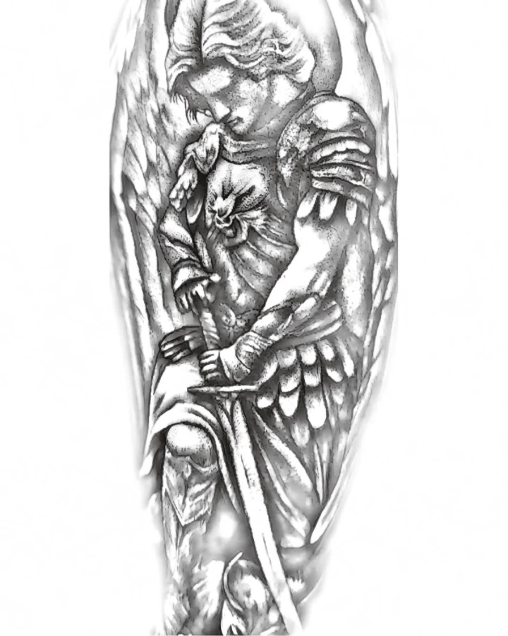
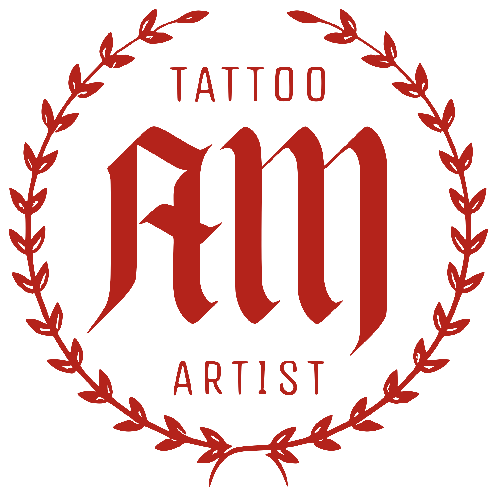
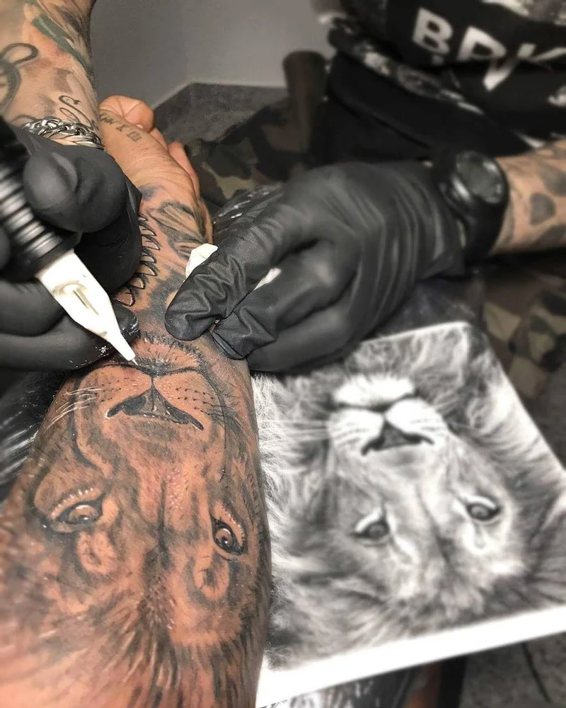
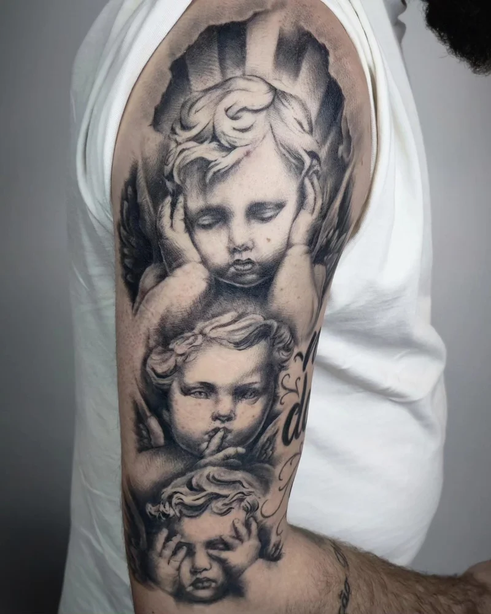
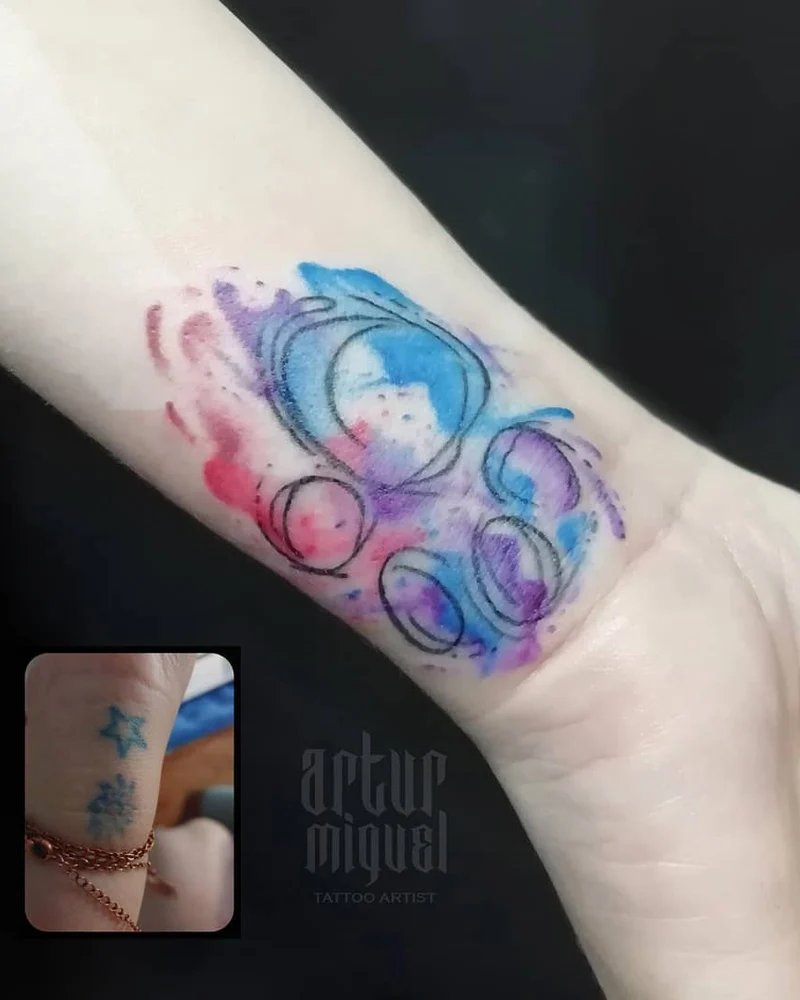
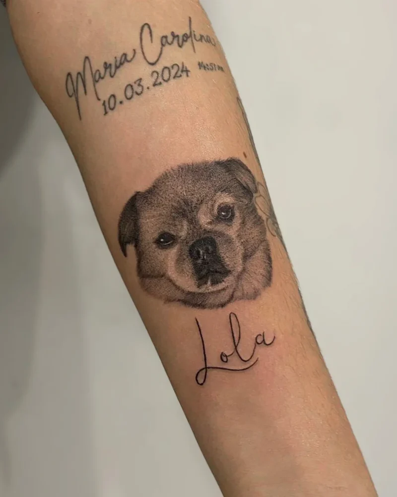
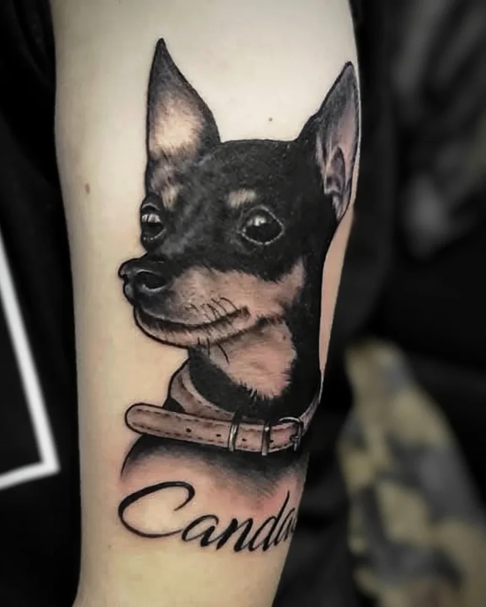
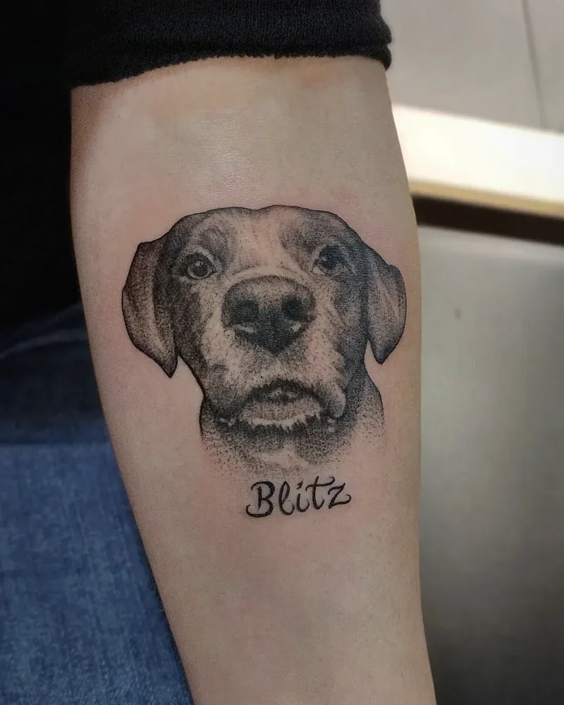
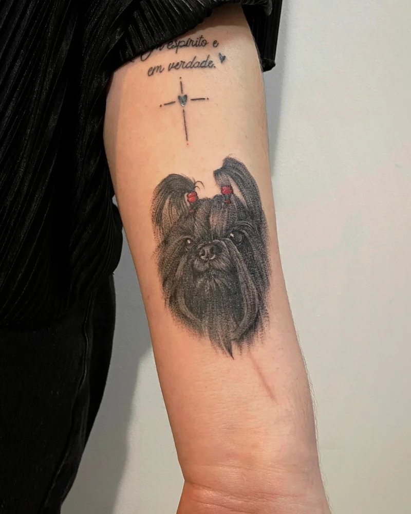
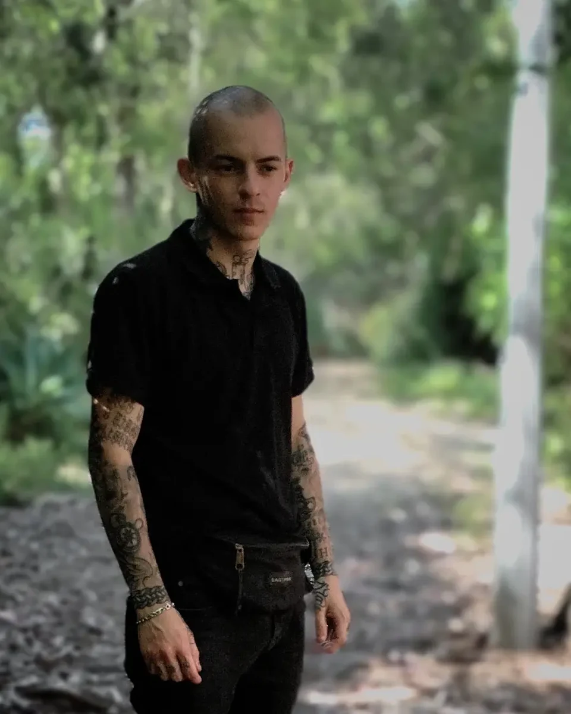

Artur Miguel, tatuador em Belas, Sintra e Lisboa. A tua ideia, a minha arte.
Artur
TatuadorRealismo a preto e cinza


Miguel
Belas, SintraSessões por marcação
A tua ideia, a minha arte.
Trabalhos
Da ideia à pele
Trazes uma foto, um nome ou só a vontade. O Artur desenha à medida e acompanha a anatomia de onde a peça vai ficar.



Amor que não se apaga
Retratos de cães a preto e cinza, com o nome escrito à mão. É dos trabalhos que o Artur mais faz.





O Artur
O Artur Miguel tatua há cerca de dez anos entre Lisboa e Sintra. Passou pela Dream Art Tattoo, pela Decision e pela Be Ink, e hoje recebe em Belas.
O que mais faz é realismo a preto e cinza: santos e anjos, retratos, leões e lobos, e os cães de quem o procura. Também faz lettering, fine line e cover-ups.
“Não é só tinta. É confiança, precisão e dedicação em cada detalhe.”Falar com o Artur
Onde
Belas · Sintra
A poucos minutos de Lisboa, Queluz e Amadora. A morada certa segue com a marcação.
Sessões por marcação. Envia a ideia e combinam o dia.
Pedir orçamento
- 1Escreves a tua ideiaTema, zona e tamanho. Fotos de referência ajudam.
- 2O Artur respondeCom o valor e as datas livres.
- 3Marcam a sessãoO desenho fica pronto para esse dia.
- 4Tatuas e cuidasLevas as indicações para sarar bem.